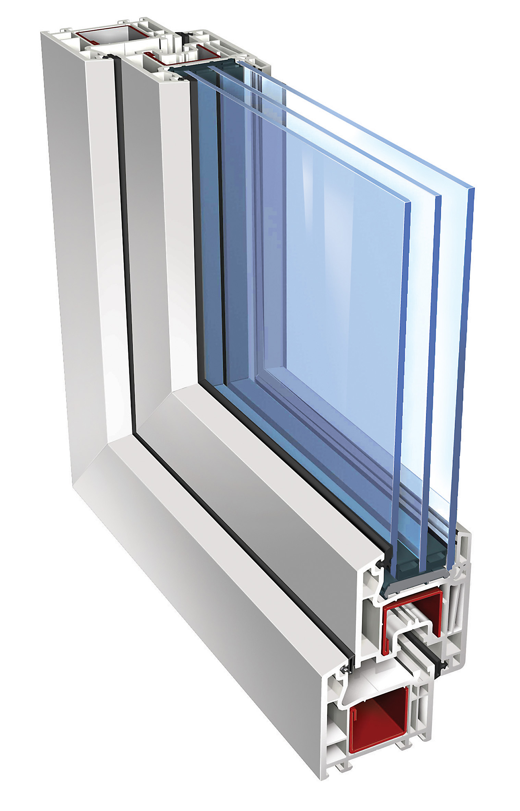

IVAPER (GEALAN)Ivaper 62
Трехкамерная универсальная оконная система тольщиной 62 мм.
Оптимальное решение с позиции цены и качества !
-
Благодаря оптимальной ширине оконного профиля 62 мм, а также продуманной конструкции трех камер профиля ПВХ, металлопластиковые окна обеспечивают отличную теплоизоляцию при любых погодных условиях.
-
Широкий фальц оконного профиля ИВАПЕР позволяет установить современные стеклопакеты шириной до 33 мм.
-
Двойная система уплотнения металлопластикового окна гарантирует надежную и длительную защиту от проливного дождя и сильного ветра.
-
Плавные контуры оконного пластикового профиля ПВХ и его ровная поверхность делают мытье металлопластикового окна простым и приятным.
-
Петли прочно и надежно крепятся к раме саморезами, проходящими через сталь, а надежное присоединение к створке обеспечивается специальными винтовыми каналами, что гарантирует долгое бесперебойное функционирование Вашего металлопластикового окна из профиля ИВАПЕР.
-
Плотно прилегающий штапик обеспечивает стабильное положение стеклопакета в оконном профиле.
-
Особая геометрия фальца обеспечивает прочное крепление рамы металлопластикового окна к стене здания и беспрепятственное отведение конденсата.
-
Металлопластиковые окна могут быть не только сияюще белыми.Современная технология позволяет подобрать гармонирующий с дизайном цветной профиль ПВХ. Широкая цветовая гамма для пластикового профиля ИВАПЕР позволяет изготовить металлопластиковое окно как с пленочным покрытием «под дерево», так и с порошковой окраской.
Ivaper 70
Пятикамерная система оконного профиля шириной 70 мм.
Повышенные требования к морозостойкости и теплоизоляции !
-
Система морозостойких 5-камерных профилей ПВХ класса А для энергосберегающих окон и дверей с монтажной глубиной 70 мм.
-
Улучшенная теплоизоляция профиля (комбинация рама-створка R= 90м2 0С/Вт)!
-
Типовые, энергосберегающие, звукоизоляционные стеклопакеты шириной до 40 мм.
-
Тип, форма, дизайн поверхности окон – индивидуальны и зависят от Ваших архитектурных замыслов.
-
Окна из морозостойкого оконного профиля IVAPER устойчивы к перепадам температур и могут быть установлены в любом климатическом поясе России. Долговечность профилей составляет 60 условных лет эксплуатации
-
В комбинации с противовзломной фурнитурой окна IVAPER 70 надежно защищают Ваш дом от непрошенных гостей.
-
Высокие статические характеристики окон позволяют их устанавливать даже на верхних этажах высотных зданий.
Ivaper 74
Пятикамерная система оконного профиля шириной 74 мм.
Повышенные требования к статике, эксклюзив и комфорт !

-
Оконный профиль ПВХ с шириной 74 мм и оптимальной геометрией камер максимально соответствует всем требованиям по энергосбережению, звукоизоляции и безопасности, которые сегодня предъявляются к профилям при изготовлении пластиковых окон самого высокого класса.
-
Особая ширина фальца профиля ПВХ позволяет установить любой современный стеклопакет шириной до 44 мм.
-
Двойная система уплотнения профиля IVAPER 74 не пропускает внутрь ни пыль ни шум. Благодаря продуманному дизайну, в готовом пластиковом окне уплотнение практически незаметно.
-
Гладкая и чрезвычайно шелковистая поверхность оконного профиля ПВХ Ivaper сохраняет прекрасный вид в течение долгого времени. Ваши пластиковые окна на долгие годы сохранят свой первоначальный цвет и будут оставаться неизменными.
-
Плавные очертания оконного профиля Ivaper и его ровная поверхность делают уход за изготовленными из него пластиковыми окнами простым и приятным.
-
Мощное стальное армирование в профиле делает пластиковые окна конструктивно стабильными и обеспечивает длительное безупречное функционирование окон ПВХ.
-
Петли прочно и надежно крепятся к раме пластикового окна саморезами, проходящими через сталь, а надежное присоединение к створке обеспечивается специальными винтовыми каналами. Такое решение гарантирует долгую бесперебойную работу Ваших пластиковых окон.
-
Плотно прилегающий штапик обеспечивает стабильное положение стеклопакета и препятствует потерям тепла.
-
Особая геометрия фальца обеспечивает как наилучшее присоединение рамы к стене, так и беспрепятственное отведение конденсата.
-
Пластиковые окна могут быть не только сияюще белыми. Большой выбор цветных профилей ПВХ позволяют изготовить окна как с пленочным покрытием «под дерево», так и с особым покрытием acrylcolor, которое отличается долговечностью и необычайной устойчивостью к атмосферным и механическим воздействиям.
|
|